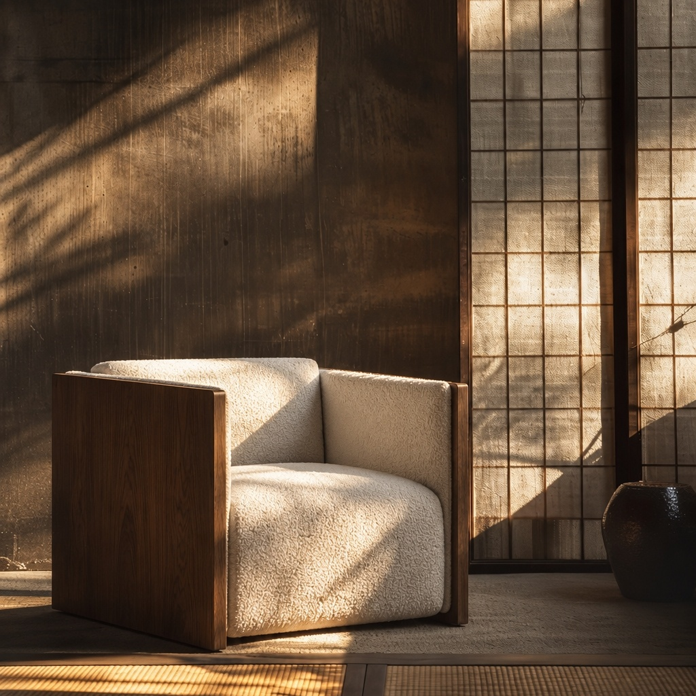
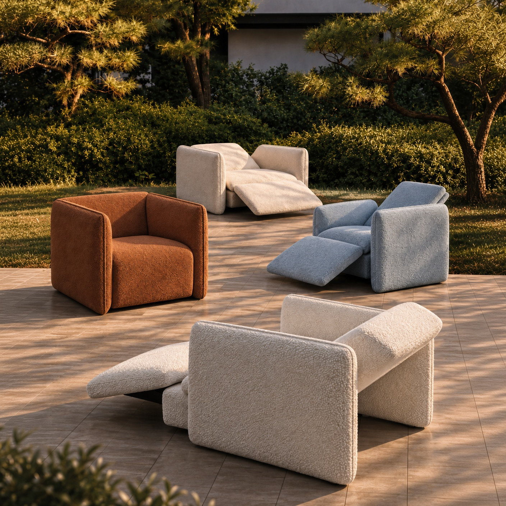
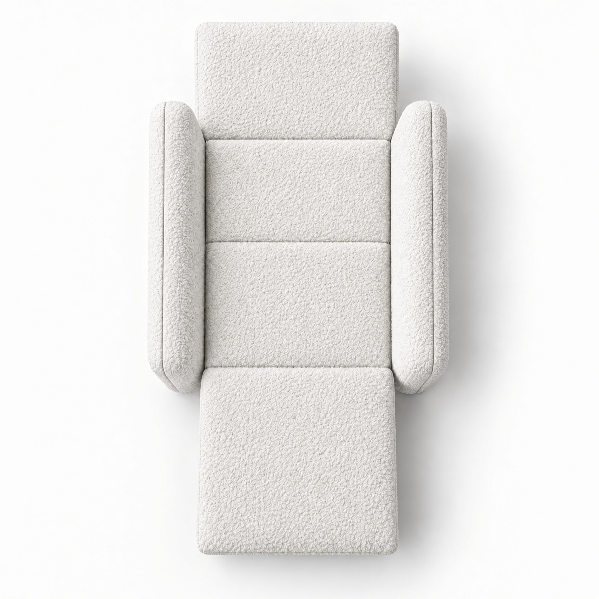
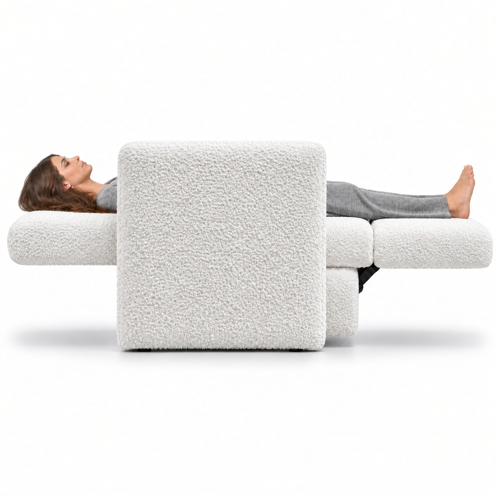
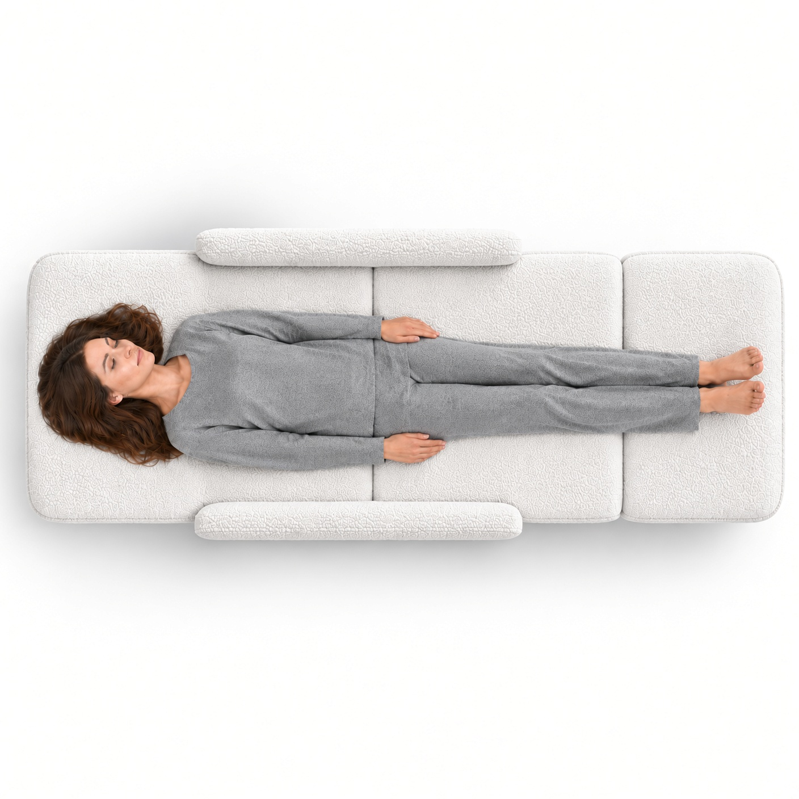
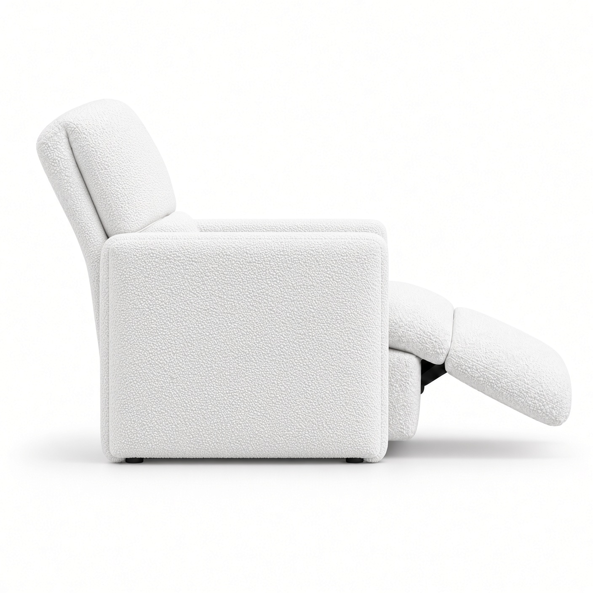
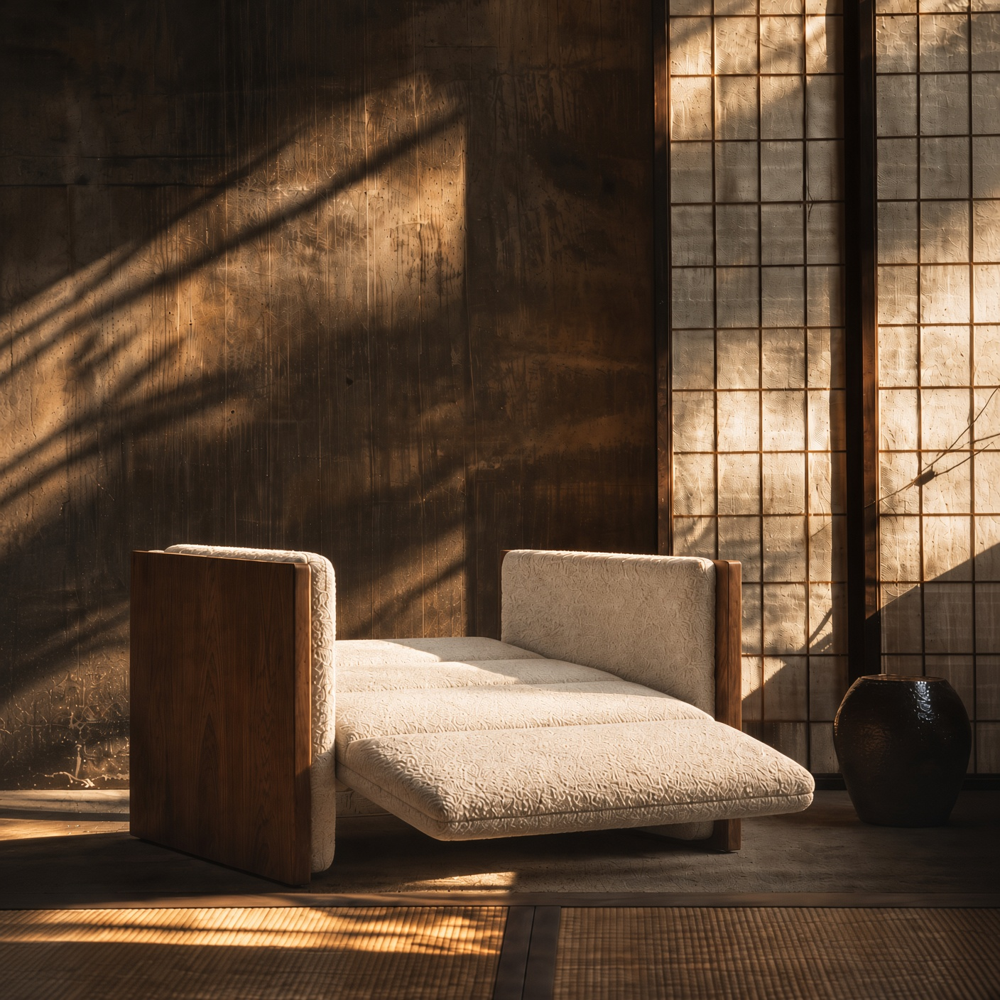
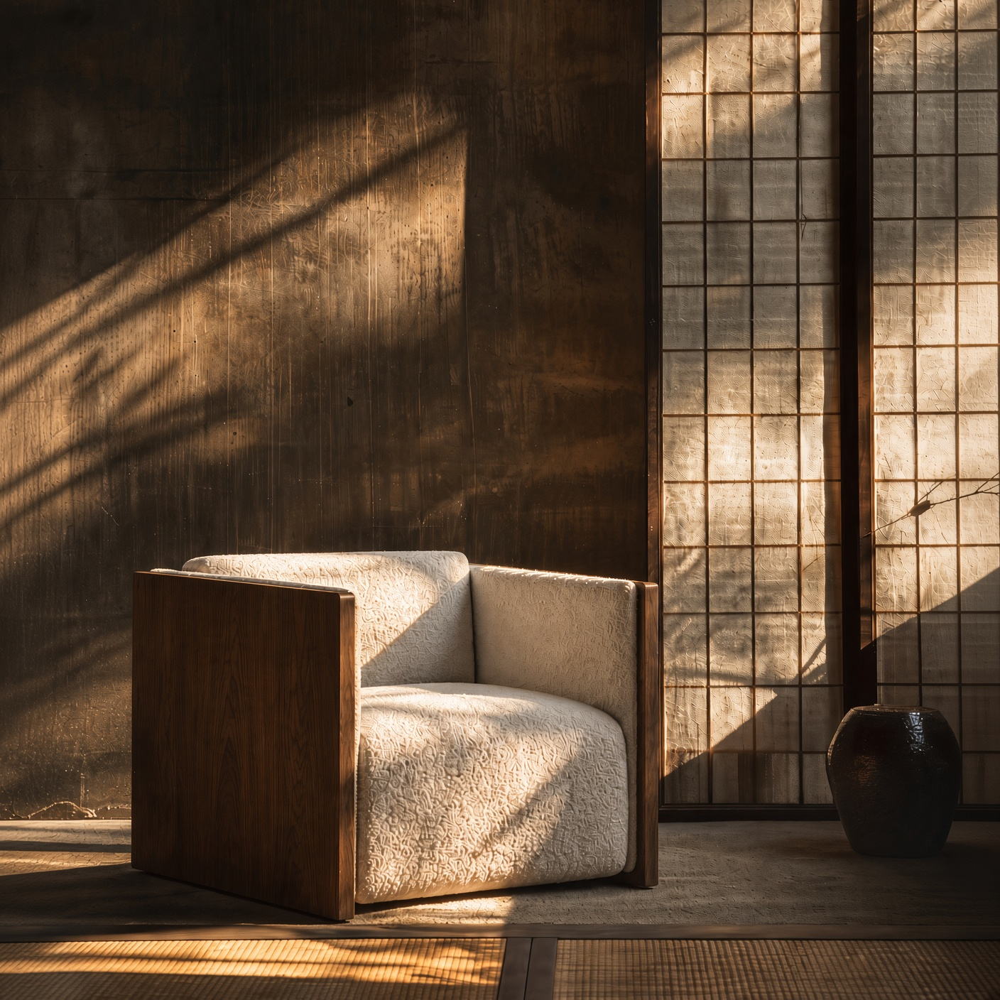

THE BODY IS THE
ARCHITECTURE.
기능 중심 의료기기의 디자인 한계를 극복한
프리미엄 척추 의료기기 '테르메(Therme)'.
거실 인테리어를 해치지 않는
하이엔드 가구 형태의 은밀하고 세련된 디자인.
10년의 사용 주기 동안 건강과 품격을 동시에
지탱하는 하이엔드 라이프스타일 대체재.

AMAC THERME PAVILLION
기술이 가구를 압도하던 시대의 종말.
가구로 완성되는 의료기기의 새로운 패러다임, 테르메(Therme).
거실 한켠을 차지하던 투박한 의료기기의 시대는 끝났습니다. 공간의
가치를 지키며 당신의 안목에 부합하는 완벽한 가구로 완성됩니다.
기술을 드러내는 것은 구시대적 설계입니다. 테르메는 공간에 거부감 없이
녹아드는 세련된 소파의 디자인 속에 독보적인 척추 의료 기술을 담아냈습니다.
아름다운 인테리어 오브제로 존재하며, 프라이빗한 웰니스 시간을
선사합니다. 건강과 품격을 동시에 지탱하는 단 하나의 대안입니다.

편안하게 관리하기 위한 영역
신체 컨디션 관리
for the day ahead.
긴장된 신체의 이완
of the day.
휴식
after activity.
마사지 프로그램
for deeper relaxation.

사용하는 관리 영역
(disc disease)
spinal stenosis
menstrual pain
thrombosis

FIND THE
LINE.
목, 등, 허리와 골반은 서로 떨어진 부위가 아니라 하나의 신체 구조 안에서 연결되어 있습니다.
AMAC는 특정 지점 하나가 아니라 신체를 따라 이어지는 전체적인 라인을 바라봅니다.
From the neck to the pelvis, the body is considered as one connected physical line.

THE BODY SETS
THE POSITION.
신체 길이와 주요 접촉 구간에 따라 마사지 모듈의 작동 위치와 관리 범위를 설정합니다.
보다 정확한 접촉은 보다 정확한 위치에서 시작됩니다.
The body determines where the system works.
Better positioning creates more considered contact.

CONTACT BEFORE
INTENSITY.
강한 자극이 항상 좋은 자극을 의미하지는 않습니다.
중요한 것은 필요한 위치에 적절한 방식으로 신체와 접촉하는 것입니다.
Precision comes before power.
Where the body is contacted matters before how strongly it is stimulated.

ONE BODY.
MULTIPLE CURVES.
경추, 흉추, 요추와 골반은 서로 다른 형태와 곡률을 가지고 있습니다.
따라서 하나의 몸 안에서도 관리 부위에 따라 접촉 방식은 달라질 수 있습니다.
The body contains different curves.
Each region may require a different approach to contact.

POSITION
CHANGES LOAD.
눕기, 서기, 앉기, 몸을 앞으로 기울이기.
자세가 달라지면 척추와 주변 구조에 전달되는 기계적인 부하 역시 달라질 수 있습니다.
Posture changes the mechanical conditions of the body.
Different positions create different demands on the spine.

SITTING IS
NOT NEUTRAL.
업무, 공부, 운전처럼 한 자세를 오랫동안 유지하면 목과 등, 허리, 골반 주변에 긴장감이 남을 수 있습니다.
움직이지 않는 시간도 몸에는 하나의 조건입니다.
Stillness does not mean the body is doing nothing.
Long periods of sitting can create physical tension.

BENDING CHANGES
THE EQUATION.
상체를 앞으로 기울이면 신체의 무게중심과 근육의 작용 방식이 달라집니다.
직립 자세와 전방 굴곡 자세는 신체에 동일한 조건을 만들지 않습니다.
Leaning forward changes the relationship between gravity, muscle activity and the spine.

LOAD ADDS
LOAD.
같은 자세에서도 물건을 들거나 추가적인 무게를 지지하면 신체가 감당해야 하는 요구가 달라집니다.
자세와 하중은 함께 바라봐야 합니다.
Additional weight changes the physical demand placed on the body.
Posture and load work together.

NUMBERS NEED
CONTEXT.
척추 부하에 관한 연구 결과는 자세와 측정 방법, 실험 조건에 따라 달라질 수 있습니다.
중요한 것은 하나의 절대적인 수치가 아니라 자세와 하중에 따라 척추 부하가 변화할 수 있다는 원리입니다.
Biomechanical values depend on study conditions.
The principle matters more than a single universal number.

THE PRINCIPLE,
NOT THE NUMBER.
Nachemson의 고전적인 생체역학 연구에서는 자세 변화와 전방 굴곡, 외부 하중에 따라 요추 추간판의 기계적인 부하가 달라질 수 있음을 보여주었습니다.
Classic biomechanical research demonstrated that posture and external load can change spinal loading conditions.
Reference. Nachemson A. The Load on Lumbar Disks in Different Positions of the Body. Clinical Orthopaedics and Related Research. 1966;45:107–122.

MEDICAL CARE
HAS BOUNDARIES.
의료기기의 효능과 사용목적은 실제 인증된 제품 기능과 허가범위에 근거해야 합니다.
AMAC는 의료적 관리와 일반적인 웰니스 경험을 같은 언어로 혼동하지 않습니다.
Medical claims belong within approved indications.
Clarity is part of responsible medical-device communication.

MEDICAL CARE.
DAILY RECOVERY.
MEDICAL CARE는 허가된 의료기기 기능을 사용하는 영역입니다.
DAILY RECOVERY는 일상에서 긴장된 신체를 편안하게 관리하기 위한 영역입니다.
Medical care and daily wellness can exist within one system without being described as the same thing.

SIX MEDICAL
PURPOSES.
제품의 실제 품목 인증범위에 포함되는 경우에 한해 다음과 같은 의료기기 사용목적을 표시할 수 있습니다.
추간판(디스크)탈출증 치료에 도움 / 퇴행성협착증 치료에 도움 / 근육통 완화 / 혈액순환 개선 / 원발성 월경통 치료에 도움 / 심부정맥혈전증 예방
Each medical purpose must remain connected to the relevant certified function.

DISC
CARE.
실제 인증된 전동식정형용견인장치의 사용목적에 포함되는 경우 추간판(디스크)탈출증 치료에 도움이라는 표현을 사용할 수 있습니다.
의료 효능은 반드시 해당 인증 기능과 함께 설명되어야 합니다.
Medical indications should always remain connected to the certified component.

STENOSIS
CARE.
제품 인증범위에 해당 사용목적이 포함되는 경우 퇴행성협착증 치료에 도움이라는 문구를 사용할 수 있습니다.
웰니스 프로그램의 일반적인 휴식 표현과 의료 효능은 명확하게 구분합니다.
Regulated medical purposes and general wellness claims should remain distinct.

MUSCLE PAIN
RELIEF.
제품의 의료기기 인증범위에 포함되는 경우 근육통 완화라는 사용목적을 표시할 수 있습니다.
일반적인 '이완'과 의료기기의 '근육통 완화'는 서로 다른 의미입니다.
General relaxation and approved relief of muscle pain are different claims.

CIRCULATION
CARE.
사지압박순환장치 등 해당 의료기기 구성의 인증범위에 포함되는 경우 혈액순환 개선이라는 표현을 사용할 수 있습니다.
The medical purpose must stay connected to the certified circulation function.

MENSTRUAL
PAIN CARE.
실제 인증범위에 포함되는 경우 원발성 월경통(생리통) 치료에 도움이라는 표현을 사용할 수 있습니다.
이를 더 넓은 여성 건강 효과로 확대하여 표현하지 않습니다.
Medical communication should remain as precise as the approved indication itself.

DVT
PREVENTION.
심부정맥혈전증 예방은 해당 사용목적이 실제 의료기기 인증범위에 포함된 경우에만 표시합니다.
적용 기능과 사용 조건 또한 허가사항과 일치해야 합니다.
Prevention claims require precise regulatory grounding.

ONE SYSTEM.
DISTINCT FUNCTIONS.
견인, 온열, 진동, 압박 등은 각각 다른 작동 방식과 의료 목적을 가질 수 있습니다.
하나의 제품에 통합되어 있더라도 모든 효능이 하나의 기능에서 발생하는 것은 아닙니다.
One system can contain multiple functions.
Each function retains its own purpose.

CONTROLLED
TRACTION.
척추 견인은 무조건 강한 힘을 가하는 방식보다 허가된 작동 범위 안에서 관리 부위와 강도를 제어하는 것이 중요합니다.
AMAC가 견인을 '힘'보다 '컨트롤'의 언어로 설명하는 이유입니다.
Traction is not simply about applying more force.
It is about controlled force within defined operating parameters.

FIND THE
RIGHT LEVEL.
체형과 신체 상태, 사용 목적에 따라 적절하게 느껴지는 강도는 달라질 수 있습니다.
사용자가 자신의 상태에 맞는 수준을 선택할 수 있는 단계적인 제어가 중요합니다.
The right level differs from one body to another.
Control allows the experience to adapt.

THERMAL
CARE.
온열 기능은 신체가 접촉하는 부위에 따뜻한 환경을 제공할 수 있습니다.
마사지와 휴식 경험을 보다 편안하게 구성하고 의료 목적의 온열 효능은 실제 인증범위에 따라 별도로 표시합니다.
Heat can become part of the physical care environment.

VIBRATION
CARE.
진동 기능이 적용된 경우 반복적인 기계적 움직임을 통해 목표 부위에 자극을 전달합니다.
자극의 방식과 의료 목적은 실제 적용된 의료기기 구성에 따라 구분합니다.
Rhythmic mechanical movement can become part of the massage experience.

PRESSURE
CARE.
사지압박 기능이 적용되는 경우 신체 부위에 압력을 순차적으로 전달하는 방식으로 작동할 수 있습니다.
압박의 위치와 패턴, 의료적 사용목적은 실제 인증된 제품 사양을 기준으로 합니다.
Compression creates another controlled form of physical contact.

LIGHT-BASED
CARE.
저출력광선조사 기능이 실제 제품에 적용되는 경우 정해진 출력과 조사 조건에 따라 운용됩니다.
관련 효능은 해당 구성품의 의료기기 인증범위 안에서만 표시합니다.
Light-based functions must operate within their defined certified parameters.

CERVICAL
CONTACT.
경추는 허리와 다른 크기와 곡률을 가지고 있습니다.
목 주변을 관리할 때에는 경추의 구조에 적합한 접촉 위치와 범위를 고려해야 합니다.
The cervical region requires its own approach to contact.

SHOULDER
AND SCAPULA.
어깨와 견갑대는 업무, 운동, 스마트폰 사용 등 하루 동안 반복적으로 움직이는 영역입니다.
AMAC는 등 상부와 어깨 주변을 하나의 연결된 관리 구간으로 바라봅니다.
The shoulders and scapular region form an important upper-body care zone.

LUMBAR
CONTACT.
허리는 앉기, 서기, 숙이기처럼 일상 대부분의 자세 변화와 연결되는 영역입니다.
AMAC는 허리의 위치와 신체 접촉을 세심하게 고려합니다.
The lumbar region is central to everyday posture and movement.

PELVIC
CONTACT.
골반은 상체와 하체가 만나는 중요한 구조입니다.
목부터 허리까지만이 아니라 골반까지 연결해 바라볼 때 신체 전체의 관리 라인이 완성됩니다.
The pelvis completes the connected line from upper to lower body.

AFTER
RUNNING.
러닝 후에는 하체뿐 아니라 골반과 허리 주변에도 반복적인 움직임의 긴장감이 남을 수 있습니다.
AMAC는 활동 이후 신체가 휴식으로 전환되는 시간을 만듭니다.
After movement comes the transition into rest.

AFTER
GOLF.
골프는 허리와 등, 어깨를 반복적으로 사용하는 운동입니다.
라운드가 끝난 이후에는 반복적으로 사용한 부위를 편안하게 관리하는 시간이 필요할 수 있습니다.
Care continues after the final swing.

AFTER
TENNIS.
빠른 방향 전환과 회전, 반복적인 상체 움직임 이후에는 신체가 활동 상태에서 휴식 상태로 전환될 시간이 필요합니다.
AMAC는 운동 이후의 시간을 하나의 회복 리듬으로 설계합니다.
The body needs time to shift from performance to rest.

AFTER
DRIVING.
장시간 운전은 목과 허리, 골반을 한 자세에 오래 머물게 합니다.
목적지에 도착한 뒤 몸에도 다음 상태로 전환될 시간이 필요합니다.
Long drives end before the body fully relaxes.

AFTER
WORK.
업무와 공부에 몰입하는 동안 우리는 화면에는 집중하지만 자신의 자세에는 집중하지 않습니다.
하루의 집중이 끝난 뒤 AMAC는 몸의 속도를 낮추는 시간을 제안합니다.
When concentration ends, the body needs another rhythm.

ENERGY.
하루를 시작하거나 활동을 앞둔 시간.
ENERGY는 신체가 일상의 움직임으로 자연스럽게 전환될 수 있도록 구성하는 컨디션 관리 프로그램입니다.
ENERGY marks the transition into movement.

RELAX.
하루 동안 반복된 움직임과 긴장이 끝난 뒤에는 신체와 감각 모두 속도를 낮출 시간이 필요합니다.
RELAX는 활동의 리듬에서 편안한 휴식의 리듬으로 전환합니다.
RELAX is designed for the shift from tension into comfort.

RECOVERY
AND COMFORT.
RECOVERY는 운동이나 활동 이후의 일상적인 컨디션 관리를 위해, COMFORT는 특별한 목적 없이 편안하게 쉬기 위해 구성합니다.
질병 치료를 의미하는 표현이 아니라 일상적인 웰니스 프로그램으로 구분합니다.
RECOVERY supports the transition after activity.
COMFORT is designed around the experience of ease.

DESIGNED AROUND
THE BODY.
사람마다 다른 체형과 척추 라인을 고려하고 목에서 등, 허리와 골반까지 이어지는 신체의 흐름을 따라 의료적 관리와 일상의 휴식을 하나의 정제된 시스템 안에 담습니다.
BODY RECOGNITION · SPINAL CONTACT · CONTROLLED TRACTION · THERMAL CARE
Designed around individual proportions and the connected line of the body, AMAC Architecture Lounge Bed brings medical care and daily recovery into one considered system.
AMAC ARCHITECTURE LOUNGE BED — CARE, STRUCTURED AROUND YOU.